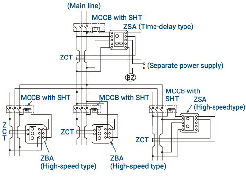
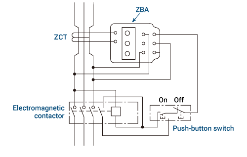
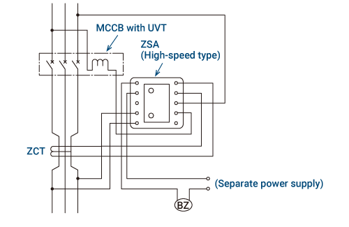
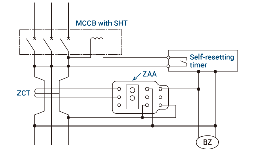
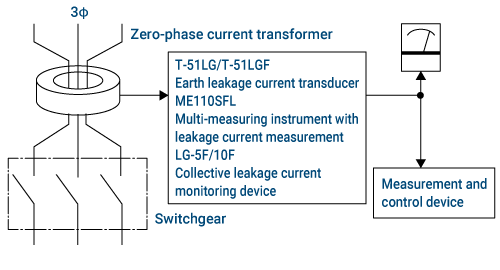
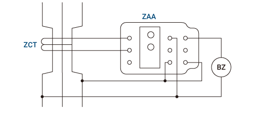

Low-voltage Circuit BreakersEarth Leakage Relays

Gangguan oleh Molded Case Circuit Breakers

- Koordinasi selektif gangguan arde dapat dicapai dengan memasang tipe tunda waktu pada jalur utama dan tipe kecepatan tinggi pada cabang.
- Tipe tunda waktu meliputi model ZBA/ZSA/ZHA/ZLA.
- Gunakan model ZSA/ZHA/ZLA jika Anda memerlukan 415V, tipe koneksi internal, dan juga keluaran alarm.
- Catu daya untuk relai kebocoran arde dapat dibuat terpisah.
Untuk mereset sistem secara otomatis
Gunakan model ZBA/ZHA, dan hubungkan catu daya kontrol ke sisi beban MCCB. (Tidak ada indikator kebocoran arde)
Untuk menunjukkan arus bocor ke tanah
Saat menggunakan model ZBA/ZHA, hubungkan catu daya kontrol ke sisi saluran MCCB atau ke catu daya terpisah. MCCB harus dihidupkan kembali setelah menekan tombol reset.
Gangguan dengan Kontaktor Elektromagnetik

- Gunakan model ZBA atau ZSA/ZHA/ZLA.
- Gambar menunjukkan indikator kebocoran arde menggunakan model ZBA, tetapi untuk mereset secara otomatis, hubungkan catu daya kontrol ke sisi beban kontaktor elektromagnetik.
- Gunakan model ZSA/ZHA/ZLA jika Anda memerlukan 415V, tipe koneksi internal, dan juga output alarm.
Gangguan Ketika Tegangan Catu Daya Turun atau Terjadi Gangguan Ground

- Gunakan model ZBA atau ZSA/ZHA/ZLA.
Gangguan Setelah Waktu Tertentu Ketika Terjadi Gangguan Ground

- Gunakan model ZAA bersama dengan timer.
- Ketika gangguan ground terdeteksi, rangkaian akan terputus pada waktu yang ditetapkan pada timer.
- Jika gangguan ground berhenti sebelum mencapai waktu yang ditetapkan pada timer, timer akan secara otomatis mereset dirinya sendiri.
Mengukur Arus Kebocoran Menggunakan ZCT

- Dalam kombinasi dengan perangkat pengukuran dan kontrol, nilai arus bocor diukur.
Mengaktifkan Alarm Hanya Selama Terjadi Insiden Kebocoran Bumi

- Gunakan model ZAA.
- Ketika gangguan tanah berhenti, sistem akan secara otomatis mereset dan alarm akan berhenti.